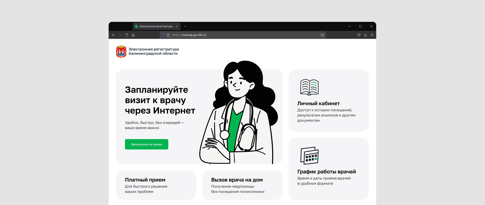
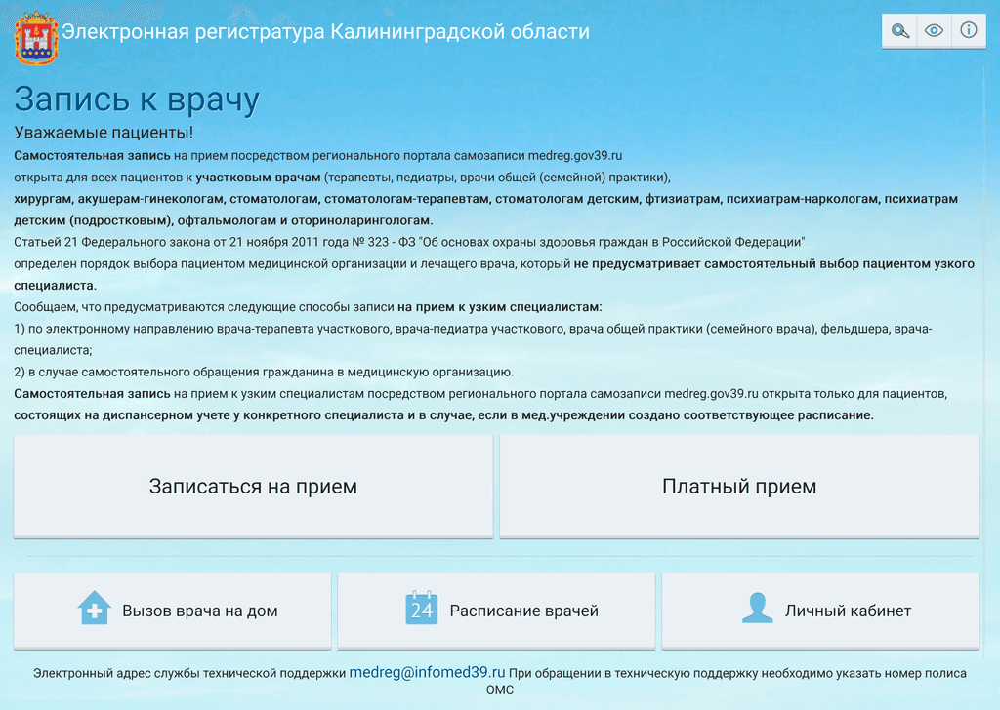
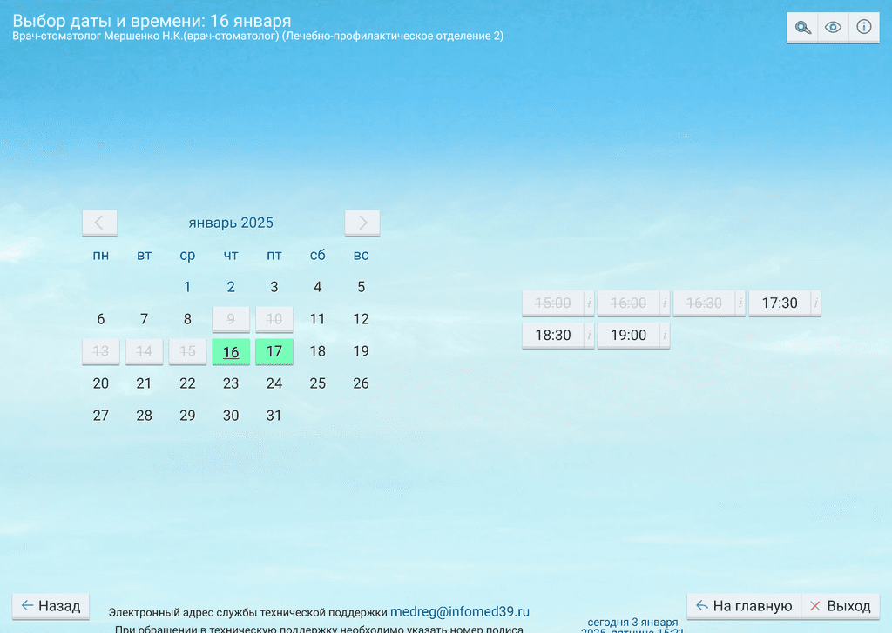

Единый портал записи к врачу в Калининградской области
Переосмыслил ключевые сценарии: убрал лишние шаги, упростил логику и сделал интерфейс предсказуемым. Время на оформление записи сократилось
Контекст
Жители региона записываются к врачу через специальный портал, но часто сталкиваются с трудностями и обращаются в регистратуру. Одна из причин обращений — сложный и непонятный интерфейс.
Поэтому нужно было снизить число обращений в регистратуру за счет удобного интерфейса. Дополнительно — улучшить пользовательский опыт в ключевых сценариях



Что сделал
В начале определил аудиторию портала и ее боли, а также ограничения и критерии успеха. После уже сформировал гипотезы, проверил их с помощью исследований и выявил «узкие» места, обобщил информацию и приоритизировал предстоящую работу.
Концепт делал слоями — структура → уточнение деталей → углубление в визуал
Статья на Хабре с описанием процесса
Результат
Большинство опрошенных положительно оценили новый интерфейс: время записи к врачу сократилось на 1–1,5 минуты, вызова на дом — на 2 минуты, а отзывы и информация о враче оказались востребованными. При этом сценарий вызова врача для близкого человека требует доработки